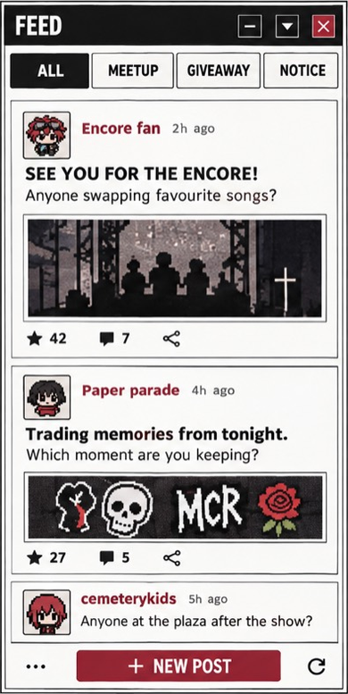

Original Feed frame normalized to 390px. Reports is unpictured; the application view uses real controller data. Actual screenshot is shown at its captured width, without page scaling.
Photo 2: frame, type, rules and action language

Actual default Admin Reports with immutable PI01 source overlay